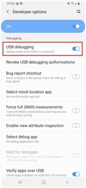

How to check if the Prevent applications from being stopped policy is enforced on an app
Last updated July 26th, 2023
Environment
- Knox Configure (KC)
- Android Debug Bridge (ADB) Toolkit
- Knox-enabled devices
Overview
If you applied the Prevent applications from being stopped policy to a device in Knox Configure (KC), this knowledge base article shows you how to check if an application is active, or if it is sleeping in Doze mode.
This method is especially useful for devices running an Android OS version below 9, as there is no way to verify the application’s running state in Settings.
Prerequisites
This guide assumes you are using a Windows computer with the following installed:
How do I verify if an app is running on my device?
To check the running state of an app on your device:
- Navigate to Settings and enable Max power saving mode. The message “Security policy restricts you from stopping this application” appears.
- Tap the Recent applications view.
If an app appears in the list, the Prevent applications from being stopped policy is applied to it.
How do I verify if an app is in sleep/Doze mode with ADB?
On your device:
-
Navigate to Settings > About phone > Software information.
-
Tap Build Number 7 times to enable Developer options.
-
Navigate to the Settings menu again. Under Developer options, enable USB Debugging.

On your computer:
- Connect the device to your computer via USB. When a prompt appears on the computer asking if you want to allow access to the device’s data, click Allow. If this is the first time the device is connected, an additional prompt with the computer’s RSA key fingerprint appears. Click OK.
- On the device, run the application you want to test on the phone. In this example, we are using the Google Chrome app (com.android.chrome).
- In the Windows Start Menu search bar, type
cmdand select Windows Command Prompt.
In the command prompt:
Change your current directory to where you extracted your ADB files. To do so, paste in the line below and replace the file path:
cd <insert_file_path_to_adb.exe_here>
Then, run the following ADB command to initiate the ADB connection between device and computer, and simulate the device being unplugged from USB:
adb shell dumpsys battery unplug
Ensure that the app you are testing is running in the background. To get the app’s activity status, enter the following ADB command:
adb shell am get-inactive com.android.chrome
Idle=false is printed on a new line, indicating that the application is actively running and not in sleep/Doze mode.
Run the following ADB command to set the application to sleep or Doze mode:
adb shell am set-inactive com.android.chrome true
Then, run the earlier command to get the status of the app again:
adb shell am get-inactive com.android.chrome
If the result is Idle=true, the app was successfully put to sleep. If the result is Idle=false, there is a device policy preventing the app from entering sleep/Doze mode.
For example, this command prompt window demonstrates what you see if this policy is not enforced on the device:

After testing is complete, run the following command to establish the USB connection again:
adb shell dumpsys battery reset
Is this page helpful?